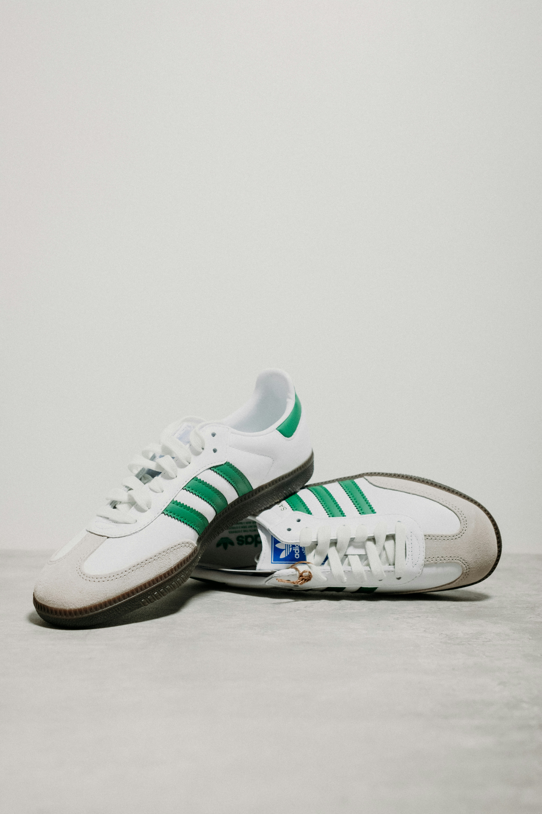

€ 129,99
De Adidas Samba is een sportschoen. Het model werd in 1949 ontworpen door Adidas-oprichter Adolf Dassler. Het is het op één na bestverkochte ontwerp van Adidas, met wereldwijd meer dan 35 miljoen verkochte exemplaren.
Meer weten over sneakers? Kijk op Wikipedia.